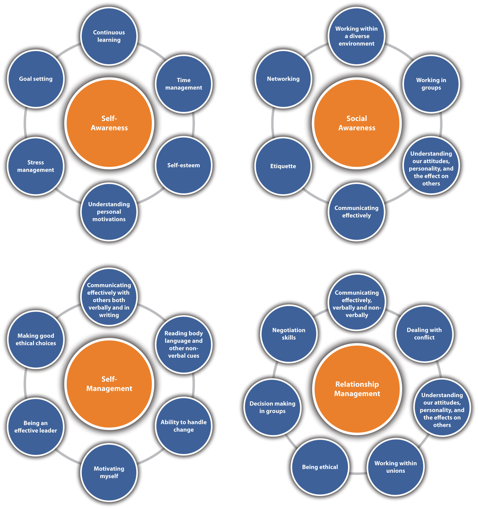
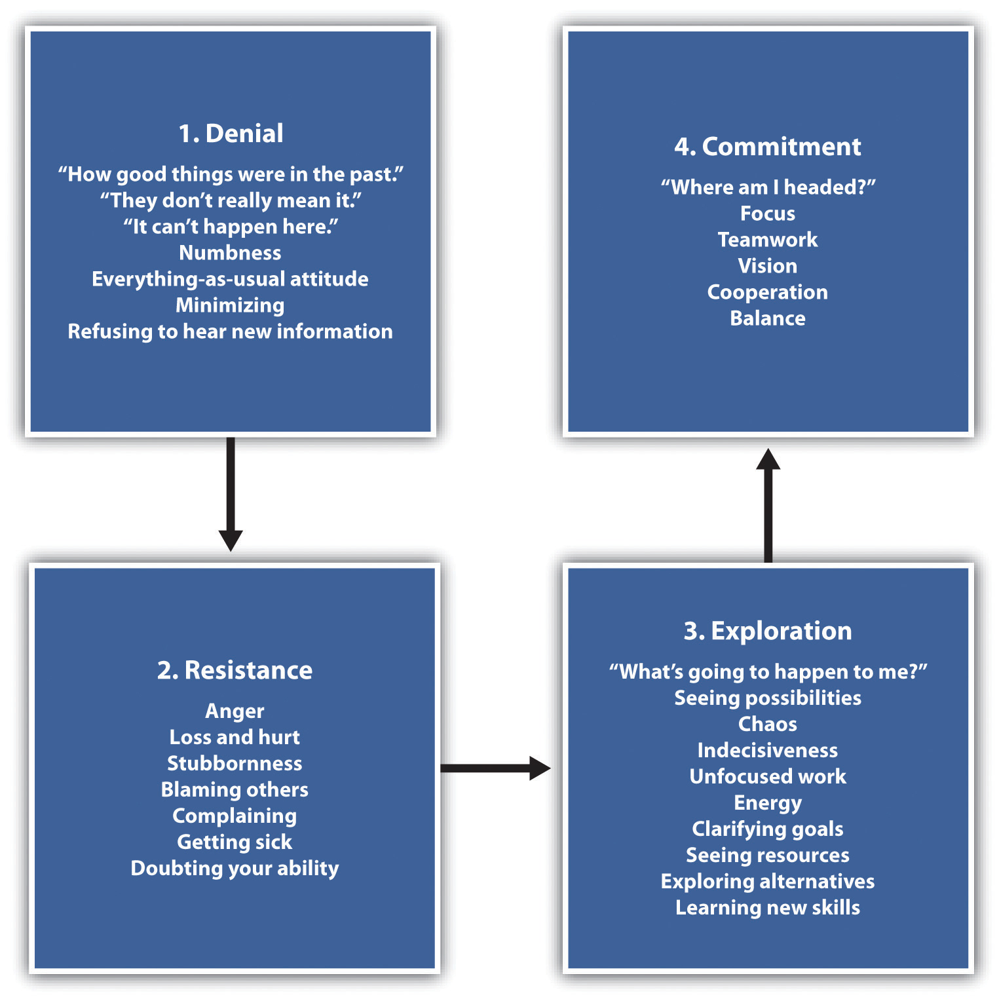

Once you are in the field, emotional intelligence emerges as a much stronger predictor of who will be most successful, because it is how we handle ourselves in our relationships that determines how well we do once we are in a given job.
Daniel Goleman
If you want to be successful, it’s just this simple. Know what you are doing. Love what you are doing. And believe in what you are doing.
Will Rogers
Reegan is highly committed to her company but is having trouble getting along with two of her coworkers. They just don’t seem to like her, even though she has a lot of good ideas to contribute to the team. While she wants to stay with the company, she just doesn’t see that happening with the current work environment. Reegan schedules a meeting with her manager, Lynn, hoping she will have some ideas on how to improve the situation.
Lynn listens intently to Reegan’s concerns and says, “Reegan, you are an asset to this organization, with all of your abilities and skills. But as of right now, you are lacking in some areas we should discuss.” Reegan is very upset with this reaction; she expected Lynn to talk with the others in her department and force them to be easier to work with. “First, the perception is that you are not a team player. You spend time in meetings talking about your ideas, but you don’t ask others what they think of those ideas, nor do you seem to notice body language that indicates someone might have something to say,” says Lynn. “Another thing I have noticed is your seemingly unwillingness to engage your coworkers in anything besides work-related tasks. Remember, this team has worked together for over eight years and they have built personal relationships. You don’t seem to be interested in anyone you work with.”
Reegan, defensive, says, “No one will say anything when I mention my ideas! It isn’t my fault that they don’t care about bettering this company. They need to speak up if they have comments or ideas of their own. As far as personal life, I am here to work, not make friends.”
Lynn sits back in her chair and asks Reegan if she has ever heard of emotional intelligence skills. Reegan hasn’t, so Lynn gives her some websites to check out, and then schedules a meeting to talk in two days about emotional intelligence.
This situation in the workplace is not uncommon yet causes thousands of lost work hours and frustrations on the part of managers and employees. Emotional intelligence skills (sometimes referred to as EQ or EI), as we will discuss in this chapter, can help people be aware of their own emotions, manage those emotions, and work better with others. These skills can be developed over time and are an important part of career success.
Before we begin this chapter, it is important to distinguish between personal and professional success, because personal success does not always mean professional success and the other way around. In addition, personal and professional success means different things to different people. For example, having a nice car, a beautiful home, and a fancy job title could be considered professional success. On the other hand, personal success may include the ability to travel, interpersonal relationships, friendships, and other factors that have little to do with professional success. Consider Desiree—she does not earn large sums of money and does not have a fancy job title. She has never been promoted and has worked as an administrative assistant for twelve years for more or less the same salary. However, she does not have the goal of being promoted and prefers to leave the office at 5 pm and not have to think about work beyond that. She has a rich life full of friends and travel and often takes classes to learn new skills such as pottery and kickboxing. One would not argue that Desiree has achieved success and happiness personally. For her, achieving this is far more important than achieving what many would call professional success. However, we know there is much crossover between skills that can help us achieve both professional and personal success or happiness. Emotional intelligence is one of those skills, which we will discuss in greater detail throughout this chapter.
Emotional intelligence is a topic that has been researched since the early 1990s and has been found to be an important indicator of life and career success. In fact, our book is written around the ability to develop emotional intelligence skills. Emotional intelligence (EQ)A form of social intelligence that involves the ability to monitor one’s own and others’ feelings and emotions, to discriminate among them, and to use this information to guide one’s thinking and action. refers to a form of social intelligence that involves the ability to monitor one’s own and others’ feelings and emotions, to discriminate among them, and to use this information to guide one’s thinking and actions.Cherniss, Cary. (2000). Paper presented to annual meeting of the Society for Industrial and Organizational Psychology, New Orleans, LA, April 15, 2000. Accessed February 26, 2012, http://www.eiconsortium.org/reports/what_is_emotional_intelligence.html; Mayer, J. D., Caruso, D., & Salovey, P. (1999). Emotional intelligence meets traditional standards for an intelligence. Intelligence, 27, 267–98. This is different from intelligence quotient (IQ)The measure of intelligence based on a score derived from an intelligence test. in that IQ measures intelligence based on a score derived from intelligence tests. The other main difference between the two is that IQ is stable over a lifetime, while EQ can grow and develop over time.
The original researchers of EQ, John Mayer and Peter Salovey,Mayer, J. D., Salovey, P., & Caruso, D. R. (2000). Models of emotional intelligence. In R. J. Sternberg (Ed.). Handbook of intelligence (pp. 396–420). Cambridge, England: Cambridge University Press. provided the first hint of emotional intelligence in their research, but much of the later research on emotional intelligence was done by Daniel Goleman.Goleman, Daniel. (n.d.). Emotional intelligence. Accessed February 26, 2012, http://danielgoleman.info/topics/emotional-intelligence/ According to Goleman, there are four main aspects to emotional intelligence, which we will discuss later in this section. First, why is emotional intelligence necessary for success?
To begin with, different from what was previously thought, IQ is not a good predictor of job performance, happiness, or success. Goleman points out that if this myth were true, everyone who graduated at the top of their class with honors would be the most successful people. Because we know this isn’t the case, we know qualities other than just IQ can help predict success. Research by Travis Bradberry and Jean Greves has shown that EQ makes up 58 percent of our job requirements and is the single biggest predictor of performance in the workplace and the strongest driver of leadership and personal excellence.Bradberry, Travis, & Greaves, Jean. (2009). Emotional Intelligence 2.0 (p. 21) TalentSmart Publishing. Their research also showed that 90 percent of high performers at work had high EQ, while 20 percent of low performers had low EQ. In other words, you can be a high performer at work without EQ, but the chances are slimmer with low EQ.Bradberry, Travis, & Greaves, Jean. (2009). Emotional Intelligence 2.0 (p. 21) TalentSmart Publishing. EQ research by Bradberry and Greves shows a link between higher EQ and higher salary. In fact, for every point increase in EQ, there is a $1,300 per year increase in salary.Bradberry, Travis, & Greaves, Jean. (2009). Emotional Intelligence 2.0 (p. 22) TalentSmart Publishing.
In one study performed by Virginia Tech,Virginia Tech. (2005, October 5). Emotional intelligence may be good predictor of success in computing studies. ScienceDaily. six hundred undergraduate computer science students and twenty institutions participated in a survey that measured emotional intelligence and the ability to handle demanding curriculum. Although emotional intelligence was not directly linked to academic success in the study, students with higher levels of emotional intelligence had more self-efficacy (belief in one’s own ability), which allowed them to handle problems better—creating higher academic success. For example, the ability to read body language and understand when someone is sad or mad and needs to talk is an emotional intelligence skill. These skills enable us to interact with others successfully. Consider a person who does not have a “filter” and continually puts down others and says exactly what is on their mind, even if it is hurtful. This clear lack of emotional intelligence affects this person’s ability to have good, healthy relationships, both at work and in their personal life.
So, we know that emotional intelligence is important for success at work, at school, and in our personal lives. Let’s discuss the four main components of EQ:
Author and Pulitzer Prize nominee Daniel Goleman discusses the importance of emotional intelligence in career success.
To increase our self-awareness skills, we should spend time thinking about our emotions to understand why we experience a specific emotion. We should look at those things that cause a strong reaction, such as anger to help us understand the underlying reasons for that reaction. By doing this, we can begin to see a pattern within ourselves that helps explain how we behave and how we feel in certain situations. This allows us to handle those situations when they arise.
To increase our self-management skills, we can focus on the positive instead of the negative. Taking deep breaths increases blood flow, which helps us handle difficult situations. Although seemingly childish, counting to ten before reacting can help us manage emotions such as anger. This gives us time to calm down and think about how we will handle the situation. Practicing positive self-talkRefers to the thoughts we have about ourselves and situations throughout the day. can help increase our self-management. Self-talk refers to the thoughts we have about ourselves and situations throughout the day. Since we have over 50,000 thoughts per day,Willax, Paul. (1999, December 13). Treat customers as if they are right. Business First, accessed March 2, 2012, http://www.bizjournals.com/louisville/stories/1999/12/13/smallb2.html?page=all getting into the habit of managing those thoughts is important. By recognizing the negative thoughts, we can change them for the positive. The following are some examples:
| Positive | Negative |
|---|---|
| I made a mistake. | I am, or that was, dumb. |
| I need some work on xx skills. | I am an idiot. |
| It may take a bit more effort to show them what I have to offer. | They will never accept me. |
| I need to reprioritize my to do list. | I will never be able to get all of this done. |
| Let me see what seminars and training is available. | I just don’t have the knowledge required to do this job. |
Increasing social awareness means to observe others’ actions and to watch people to get a good sense of how they are reacting. We can gain social awareness skills by learning people’s names and making sure we watch body language. Living in the moment can help our interactions with others as well. Practicing listening skills and asking follow-up questions can also help improve our social awareness skills.
Strategies for relationship management might include being open, acknowledging another’s feelings, and showing that you care. Being willing to listen to colleagues and employees and understanding them on a personal level can help enhance relationship management skills. Being willing to accept feedback and grow from that feedback can help people be more comfortable talking with you.
The importance of emotional intelligence, as we introduced at the start of this section, is imperative to being successful at work. Figuring out a plan on how we can increase our emotional intelligence skills can also benefit us personally in our relationships with others.
Emotional intelligence is the key to everything we will discuss throughout the book, and each aspect of our discussion relates back to emotional intelligence, as you can see from Figure 2.1.
Figure 2.1
Emotional intelligence applies to all areas of our lives, both professionally and personally. We will be discussing each of these emotional intelligence aspects throughout the book.
Visit http://www.queendom.com/tests/access_page/index.htm?idRegTest=3037 (you do not need to register) and take the 146-question quiz on emotional intelligence, which should take about an hour. Then answer the following questions:
As we discussed, our emotional intelligence is the cornerstone for career success. Part of self-management is knowing ourselves and being able to set goals based on understanding our own needs and wants.
Many people end up adrift in life, with no real goal or purpose, which can show lack of self-management. Some people are happy this way, but most people would prefer to have goals that can set the direction for their life. It is similar to going on a road trip without a map or GPS. You might have fun for a while, going where the wind takes you, but at some point you may like to see specific things or stop at certain places, which creates the need for GPS. What happens if you have been driving aimlessly for a while but decide what you want to see is five hundred miles back the other way? A goal would have helped you plan the steps along the way in your trip. Goals are the GPS for your life. Research done by Locke et al. in the late 1960s shows a direct connection between goal setting and high achievement.Locke, Edwin A., Shaw, Karyll N., Saari, Lise M., & Latham, Gary P. (1981). Goal setting and task performance: 1969–1980. Psychological Bulletin, 90(1), 125–52. One of the most popular methods to setting goals is called the SMART philosophyA strategy to use when setting goals; includes goals being specific, measureable, attainable, realistic, and time-oriented.. This includes the following “steps” or aspects to goal setting:
Time-oriented. There should always be a timeframe attached to a specific goal. Most individuals will have longer-term and shorter-term goals. For example, a long-term goal might be to manage a medical lab. In order to meet this longer-term goal, shorter-term goals might include the following:
Within all of our goals, there are shorter-term objectives. ObjectivesThe shorter-term goals we must do in order to accomplish our bigger goals. are the shorter-term goals we must do in order to accomplish our bigger goals. For example, possible objectives for two of the goals mentioned previously might be the following:
Earn a medical lab technology degree
Obtain employment as a medical lab tech
Another effective strategy in goal setting is writing goals down.Locke, E. A., & Latham, G. P. (1990). A theory of goal-setting and task performance. Englewood Cliffs, NJ: Prentice Hall. Why is this so important? First, you are forced to clarify and think about specific goals using SMART objectives. Second, writing goals down can turn your direction into the right one, and you will be less likely to be sidetracked by other things. Writing goals down and revisiting them often can also provide an outlet for helping you celebrate meeting a certain objective. In our previous example, by writing these things down, we are able to celebrate the smaller successes such as earning a 3.7 GPA or finishing an internship.
Research performed published in the Academy of Management journal also suggests that goals are much more likely to be met if the goal is set by the person attaining the goal.Shalley, Christina E. (1995, April). Effects of coaction, expected evaluation, and goal setting on creativity and productivity. Academy of Management Journal, 38(2), 483–503. For example, if Sherry’s parents want her to become a dental hygienist, but she really wants to become an automotive technician, achieving the goal of dental hygienist may be more difficult, because it’s not her own. While this may seem obvious, we can easily take on goals that other people want us to achieve—even well into our adult life. Expectations from our partner, spouse, friends, and social group can influence our goals and make them not our own. For example, if in your group of friends all have the goal of becoming lawyers, we can assume this should be our goal, too. As a result, we may try to meet this goal but be unsuccessful or unmotivated because it isn’t truly what we want.
Another thing to consider about goal setting is that as we change, and situations change, we need to be flexible with them. For example, let’s say Phil has a goal of earning a degree in marketing. Suppose Phil takes his first marketing class but creates a great idea for a new business he would like to start once he graduates. At this point, Phil may decide earning an entrepreneurship degree instead makes the most sense. It is likely, as a result, since Phil’s goal has changed, objectives and timelines may need to change as well.
Revisiting our goals often is an important part to goal setting. One of the most popular examples for rigidity in goal setting was Ford. In 1969, the goal was to develop a car that weighed less than 2,000 pounds and was less than $2,000. This was to be done by the model year 1971. As you know, this was a very short time to reengineer and redesign everything the organization had done in the past. Ford met their goal, as the Ford Pinto was introduced in 1971.Why Goal Setting can Lead to Disaster. (2012, May 15). Forbes Magazine, accessed May 15, 2012, http://www.forbes.com/2009/02/19/setting-goals-wharton-entrepreneurs-management_wharton.html However, due to the rush to meet the goal, common safety procedures were not followed in the development process, which resulted in disaster. Engineers did not look at the safety issues in placement of the fuel tank, which resulted in fifty-three deaths when the car went up in flames after minor crashes. While this is an extreme example, revisiting goals, including timelines, is also an important part of the goal-setting process.
This animation discusses goal setting and gives tips on how to set goals that are more achievable.
In a 2005 studyKnight, Jennifer. (2005). Exploring emotional intelligence and IQ: Comparing violent and non-violent criminal offenders. Dissertation, accessed May 16, 2012, http://proquest.umi.com/pqdlink?did=913522881&Fmt=7&clientId =79356&RQT=309&VName=PQD that compared violence and emotional intelligence, inmates were divided into nonviolent offenses and violent offenses. When emotional intelligence was measured, there was a clear difference between emotional intelligence deficiencies and violence as a vehicle to act out emotions. This, of course, is an extreme example, but it proves the point: the ability to understand our emotions allows us to be better prepared to handle those emotions appropriately, which in turn can create success personally and at work. It allows us to create coping tools to deal with emotions such as anger and frustration.
The ability to manage ourselves helps us handle our emotions but also allows us to handle ourselves in other ways. For example, practicing self-management can teach us how to forgo immediate gratification to meet our goals, a necessary skill to create the kind of life you want. Time management, handling change, and other skills allow us to be successful personally and professionally.
Social awareness is a skill that helps us to see how we are affecting others. Often, we can get too tied up with ourselves and we fail to notice how another person is feeling. Someone who “gets” the social cues, for example, can develop positive working relationships and motivate people.
Relationship management can help us foster skills that help us maintain good working relationships with others. Learning how to handle conflict and communicate well are necessary skills to have a successful marriage, relationship, friendship, and work relationships.
All of these skills are part of every chapter in this book, as the core of a successful career and a happy work life is emotional intelligence skills.
Part of reaching goals also refers to our ability to manage our time. This is also part of emotional intelligence, specifically, self-management—the ability to understand what needs to be done and appropriately allot time to achieve our goals. Time managementRefers to how well we use the time we are given. refers to how well we use the time we are given. In order to meet our goals, we must become proficient at managing time. Common tips include the following:
Effective time management can help us manage stress better but also ensures we can have time to relax, too! Making time management a priority can assist us in meeting our goals. Another important part of career success and personal success is the ability to deal with change, another aspect to emotional intelligence.
As we discussed, the ability to set goals is part of emotional intelligence. Perhaps equally as important, being flexible with our goals and understanding that things will change—which can affect the direction of our goals—is part of being emotionally intelligent.
Dealing with change can be difficult. Since most businesses are always in a state of flux, for career success, it is important we learn how to handle change effectively. But first, why do people tend to resist change? There are many reasons why:
When a change occurs or is occurring, people are likely to experience four phases associated with that change. First, they may experience denial. In this phase, they do not want to accept the change nor do they want to move on to the future. In the resistance phase, people may feel angry or hurt. They may wistfully think about how great things were before the change. In the third phase, exploration, the person may begin to accept the change but with some reservations. In this phase there may be confusion as people start to clarify expectations. In the commitment phase, people have accepted the change, understand how they fit with the change, know how the change will affect them, and begin to embrace it. For example, assume Alan is an expert on the company’s most popular product offering, a special computer program used for accounting purposes. He is the organization’s top seller, with many of his commissions coming from this product. However, the company has just developed new accounting software, which has much better features for customers. He might find this adjustment difficult because he is comfortable with the current software, and it has been lucrative for him to sell it. Here is how he might go through the phases:
As you can see in this example, Alan’s resistance to the change was because he didn’t understand the need to change at first and he was worried about how this change would affect the value of his skills.
Because of technology changes and the fact that many companies have global operations and the need for businesses to be agile, change is a constant force affecting business. Be positive about change and accept it as a necessary part of our work life. We cannot expect things to stay the same for very long. The better we can get at accepting change, the more successful we will likely be in our career.
Figure 2.2
This figure depicts the common process people go through when experiencing change. At each phase, the employee will have a different set of feelings. Leadership can go a long way to helping people understand the need for change, the reason for change, and explaining how the change will affect the employee.
Many a theory has been written about how people undergo change, but one of the more popular models is Lewin’s Model on Change.Lewin, Kurt. (n.d.). Frontiers of group dynamics. Human Relations, 1, 5–41. His model proposes three main phases to handling change:
Figure 2.3

Lewin’s Change Model suggests there must be a motivation to change before a change can take place.
When we become comfortable with change, we are able to allow change into our professional lives. Often, people are too afraid for various reasons to go after that promotion or a new job.
This short video explains how Lewin’s Change Model works. Willingness to change is necessary for career success!
Continuous learningInvolves the process of constantly trying to update skills and learn new ones. involves the process of constantly trying to update skills and learn new ones. This shows high emotional intelligence in the area of self-awareness and self-management (“I know I need to learn this new skill to be more valuable to my employee or to be more productive in my personal life”). Having self-awareness, or knowing our strengths and weaknesses, is the first step in improving our chances for career and personal success. Once we are aware (self-aware) of our weaknesses, we can better choose areas in which we would like to learn. For example, if Anton knows he isn’t very good at giving presentations, being able to recognize this is self-awareness. Then, finding opportunities to work on this, such as joining a Toastmasters club, shows emotional intelligence in the area of self-management. Anton recognized his weakness and finds ways to improve his abilities.
People who often learn new skills tend to be happier individuals and more value to their organizations. For example, Zappos, a shoe retailer based in Seattle, Washington, maintains a “Wishez” list. Employees post things they are interested in learning, such as how to cook an ethnic dish, and they are connected with other members in the organization who have these skills. This focus on continuous learning makes for happier employees, which makes for more productive workers. In a study by Kansas State University, it was estimated that happy workers are in fact, more productive. The study found that employees who are psychologically distressed cost $75+ per week to the organization.Hodges, Kristin. (2009, February 3). K-state researcher says happy employees are critical for an organization’s success. Accessed March 21, 2012, http://www.k-state.edu/media/newsreleases/feb09/wellbeing20309.html
Learning new skills such as taking a pottery class or learning to ski or surf can help people increase happiness, which in turn can build self-confidence. This confidence can result in a richer and more fulfilling life since we learn new things that we enjoy doing.
Most people who find career success have a habit of being curious and interested in a variety of topics that can enhance their personal lives but also their professional lives, too. As management guru Brian Tracy points out, continuous learning is one of the “nine disciplines” to being successful.Korn, Marc. (2011, December 8). Self-discipline: The art of continuous learning. Accessed March 6, 2012, http://marckornblog.com/discipline-of-continuous-learning/ But what does it mean to learn continuously? There are several ways we can learn, as depicted in Figure 2.4 "Some Suggestions for Continual Learning".
Figure 2.4 Some Suggestions for Continual Learning

From a career perspective, if we choose not to learn continuously, we end up being stale in both our skills and abilities. Since most industries change so quickly, it is likely our current skills will be outdated in five to ten years. This means we need to constantly update to understand the next set of skills we need to be successful. In addition, sometimes we have to “unlearn” skills as new and better ways evolve. For example, if you have golfed before, you may mimic the golf swings you see on television when you go out to play. Although this swing may work for you for some time, you may get to a point where you want to improve, so you take a lesson from a golf pro. The golf pro looks at your swing and offers advice on how to improve distance and accuracy. In this case, you may have to “unlearn” your old swing in order to improve your golf game. Unlearning can apply to all aspects of our life, not just sports. When things in an organization change, it can be challenging to unlearn the old way and be comfortable with the new way of doing things. Unlearning means you may have to let go of an old way of doing something that may have worked for a long period of time. For example, Parelli Natural Horsemanship program requires training participants to start from square one when learning how to train their horse.Parelli Natural Horse Training website. Accessed May 18, 2012, http://www.parellinaturalhorsetraining.com/natural-horsemanship/ The idea is they need to “unlearn” their old ways of training their horse in order to become effective at the sport. So no matter if someone has ten years of experience with horses or zero years, everyone goes back to basics. This can happen in organizations, too. For example, an organization that had high sales in 2007 had to unlearn their way of doing business before the recession in order to continue being successful. A new economy has required relearning of how to operate with many economic changes. In society today, the ability to learn, unlearn, and then learn again can happen over a span of a few months rather than many years. For example, many organizations get “stuck” on a specific way of doing things, and when those things are unlearned, the company can begin to move forward and learn the new way of doing things.
Many organizations value people who can show their focus and dedication to continually learning and unlearning. For example, the Office of Personnel Management of the US Fish and Wildlife Service employs over 9,000US Fish and Wildlife homepage. Accessed March 6, 2012, http://www.fws.gov/help/about_us.html people. Because of their large staff, they have identified twenty-eight leadership competencies, one of which is continual learning. Continual learning is important because it makes us more valuable to our employers, which can result in promotions, higher salary, and more responsibility as we grow our career.
Brian Tracy, management guru, discusses the importance of continuous learning in entrepreneurship.
Continual learning is valued and expected at all levels with the Fish and Wildlife department.US Fish and Wildlife Service, National Conservation Training Center website. Accessed March 6, 2012, http://nctc.fws.gov/led/competencymodel/Foundational/continuallearning.html
| Continual Learning Element | Distinguishing behaviors for employees, supervisors, and upper-level management |
|---|---|
| Values learning and takes initiative to build knowledge and skills. | For All Employees: |
| Strives for continuous improvement and is actively engaged in exploring new ideas and concepts. | |
| Seeks out and engages in self-improvement activities. | |
| Spends time learning from others. | |
| Creates time within and away from the job to learn. | |
| Seeks challenging assignments and unfamiliar tasks. | |
| Seeks out new developments, techniques, and advances in knowledge and ideas. | |
| Seeks out new approaches, tools, and methods in their own field of expertise. | |
| Maintains professional certification or license, if appropriate. | |
| Additional for First Appointment Leaders and Above: | |
| Encourages and supports professional growth including pursuit of appropriate certifications and licenses. | |
| Gives others the autonomy to approach issues in their own way, including the opportunity to make and learn from mistakes. | |
| Additional for Midlevel Leaders and Above: | |
| Invests in the further development of personal supervisory skills, in better understanding the issues and needs that affect customers, and in their own field-specific expertise. | |
| Reinforces knowledge, skills, and new behaviors gained through training and development by helping employees apply them on the job. | |
| Additional for Senior Leaders and Above: | |
| Models continuous self-development. | |
| Adds to managerial knowledge, strategic thinking, financial planning and analysis, as well as skills in supporting a learning organization. | |
| Additional for Executives: | |
| Continually updates their own and others’ awareness of the organization and the big picture context within which we work. | |
| Is reflective and learns from mistakes. | For All Employees: |
| Analyzes both successes and failures for clues to improvement. | |
| Is resilient toward setbacks and failures, analyzing them for lessons learned and building on them. | |
| Confronts problems instead of avoiding them. | |
| Additional for First Appointment Leaders and Above: | |
| Uses after-action reviews to assess performance. | |
| Additional for Midlevel Leaders and Above: | |
| Uses a variety of approaches to analyze and understand how actions led to certain outcomes and how to improve one’s approach to similar situations in the future. | |
| Is open about mistakes and failure with self and others. | |
| Contributes to procedures that enable the organization to learn from past actions. | |
| Additional for Senior Leaders and Above: | |
| Plans, implements, and learns from program and policy evaluation strategies. | |
| Additional for Executives: | |
| Ensures that new organizational policies, programs, procedures, and services are built to incorporate and profit from lessons learned. | |
| Ensures that stakeholders understand results of policy and program evaluation. | |
| Assesses gaps in knowledge and skill in self and in others. | For All Employees: |
| Assesses their own strengths and weaknesses. | |
| Actively seeks feedback on their performance. | |
| Understands their strengths and potential “fatal flaws” in knowledge and performance. | |
| Additional for First Appointment Leaders and Above: | |
| Recognizes and addresses team and team member strengths and potential “fatal flaws” in knowledge and performance. | |
| Draws on individual team member strengths rather than weaknesses to fashion assignments and help develop others in the team. | |
| Gives decision making authority to the team, where appropriate. Avoids taking over all decisions. | |
| Rewards and recognizes the good use of team skills, not just individual contributions. | |
| Additional for Midlevel Leaders and Above: | |
| Measures current skills and knowledge against competencies needed for continuing success and to meet future problems. | |
| Evaluates the impact of training on performance. | |
| Understands the value of knowledge sharing. | For All Employees: |
| Actively seeks learning in areas beyond their own technical expertise in order to become a broader resource. | |
| Participates actively in professional associations(s). | |
| Additional for First Appointment Leaders and Above: | |
| Networks with others and supports team networking to share resources and knowledge and builds upon rather than replicate the work of others. | |
| Additional for Midlevel Leaders and Above: | |
| Coaches and mentors employees. | |
| Fosters knowledge sharing and learning across units. | |
| Actively engages in partnering activities that align common goals and services. | |
| Serves as a source of wisdom and expertise on technical and organizational matters for employees. | |
| Additional for Senior Leaders and Above: | |
| Applies tools and techniques of knowledge management to share learning widely across the organization. | |
| Identifies best practices from high-performance organizations with similar missions. | |
| Helps the organization learn from customers and stakeholders and translates that learning into improved ways of performing. | |
| Additional for Executives: | |
| Develops processes and/or systems to ensure that what is learned in training or practice is shared throughout the organization and applied to work activities and strategic planning. | |
| Cooperates and/or networks across disciplinary, organizational, agency and public/private boundaries to establish and reach common understanding on issues and opportunities. | |
| Promotes benchmarking and other techniques that help an agency build upon best practices. | |
| Broadly communicates throughout the organization the need to understand others’ viewpoints, agendas, values, constraints, and behaviors and be willing to take others’ ideas into consideration. | |
| Demonstrates knowledge of learning styles and uses a variety of strategies to close learning gaps. | For All Employees: |
| Crafts and uses for their own development a variety of learning approaches, including formal course work, reading, talking with others, attending formal training, shadowing, detail assignments, and on-the-job experiences. | |
| Understands their preferred learning style and methods. | |
| Uses the IDP to link assessments, career goals, and organizational strategies to personal development plans. | |
| Works to deploy strengths. | |
| Additional for First Appointment Leaders and Above: | |
| Supports the team’s use of a variety of learning methods, including reading, talking with others, after-action reviews, attending formal training, and on-the-job experiences. | |
| Shows insight into individuals’ learning profiles and styles when making assignments or devising developmental strategies. | |
| Identifies and makes assignments that challenge team members to stretch their abilities and self-confidence. | |
| Additional for Midlevel Leaders and Above: | |
| Creates and makes developmental assignments to stretch and foster learning and development in employees. | |
| Delegates responsibility and decision making to lower levels to develop employees. | |
| Ensures that all employees have an IDP (individual development plan). Links IDPs and developmental assignments to current and future organizational needs. | |
| Understands the concept of knowledge management and leads knowledge management efforts. | For Senior Leaders and Executives: |
| Creates an environment that facilitates knowledge sharing, learning, and networking, which can support change. | |
| Builds the organization’s capacity to learn, improve, anticipate, and meet new challenges. | |
| Designs, implements, and orchestrates knowledge management strategies and initiatives throughout the organization. | |
| Integrates the development of human capital into strategic planning and creates an integrated approach to address current problems and meet emerging demands. | For Senior Leaders and Above: |
| Assesses organizational skills and strengths against current and future requirements. | |
| Manages expenditures for training and development as investments that maximize the value of human capital plans strategically for changing organizational needs in skills and knowledge. |
Everyone should consider creating a plan to help them develop their talents and create new skills. The plan might include the following:
As we learned in the earlier section on goal setting, being specific and writing down those new skills and abilities you want to develop can tend to make it more of a priority, which can result in more personal and career success.
Overall, do you feel like you use your time wisely? Think about the ways you have spent your time over the last week. Write down the amount of time you spend doing the following things on an average week: